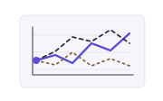

I combine artificial intelligence and mathematical optimization to tackle computationally hard power system problems. My goal is to make large-scale planning and operating decisions practical to compute.
What capacity should we build for an uncertain future?
Planning models must evaluate operating costs across many possible futures, which can become computationally expensive. I train machine learning models to estimate these costs and embed the learned models in the capacity planning optimization.
Planning: from uncertainty to investment decisions

Model possible futuresDemand & renewable generation
Operating decisions affect both immediate system costs and long-term battery degradation. I combine reinforcement learning with battery degradation models and optimization to develop control policies for energy storage and PV–storage microgrids.